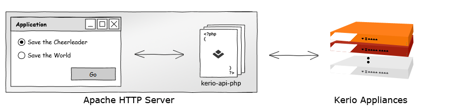

About
Kerio APIs Client Library for PHP (i.e. kerio-api-php) is designed as a layer between user application and Kerio products. With kerio-api-php, you can easily communicate directly with your server, e.g. Kerio Connect without diving deep into underlining JSON-RPC architecture. Encapsulation of JSON requests and response is done automatically by the library.
Before You Start
To be sure that your PHP environment is working properly and you are ready to go, use setup assistant. We check it for you.
Code Examples
Here you can find some basic examples and more complex sample applications.
PHP is required in this section.
Some examples might use other frameworks such as Google API. Make sure your Internet connection is available.
Supported Versions
- Kerio Connect 7.2 or newer
- Kerio Control 7.2 or newer - API in Progress
- Kerio Operator 1.0 or newer - API in Progress
- Kerio Workspace 2.0 or newer - API in Progress
- Kerio Directory 0.3 or newer - API in Progress
License
By using this Kerio APIs Client Library for PHP and its content, you consent to be bound by these terms in addition to the SDK End User License Agreement.
Disclaimer
User acknowledges that Kerio provides no warranties with this API and makes no guarantees that it will operate continuously or for any specific purpose. Moreover, User agrees that Kerio cannot be held responsible for any defects in the API or for any negative or damaging impact on User’s operating environment as a result of the use thereof. If User experiences problems with the API, User acknowledges that Kerio is not obligated to correct such problems. Finally, User understands that Kerio may alter/update the API at any time and has no obligation to announce such changes.